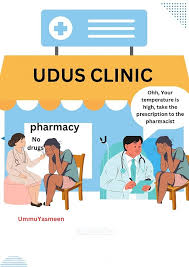

Health, Safety, and Wellness Tips
Published on January 3, 2025
The university is committed to ensuring the health and safety of its students. In addition to providing medical services on campus, UDUS offers wellness programs that focus on mental health, stress management, and maintaining a healthy lifestyle. Students are encouraged to take care of their physical and mental well-being by participating in fitness programs, attending counseling sessions, and practicing self-care routines. The university also provides tips for staying safe on campus, including how to handle emergencies and report safety concerns.
Back to News